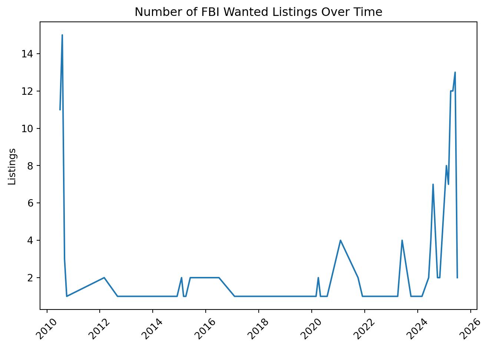
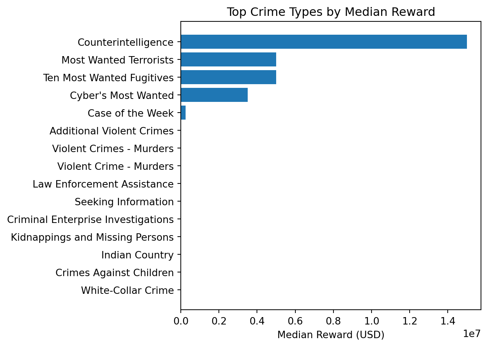
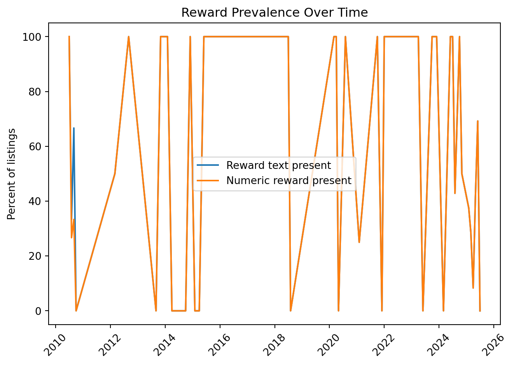
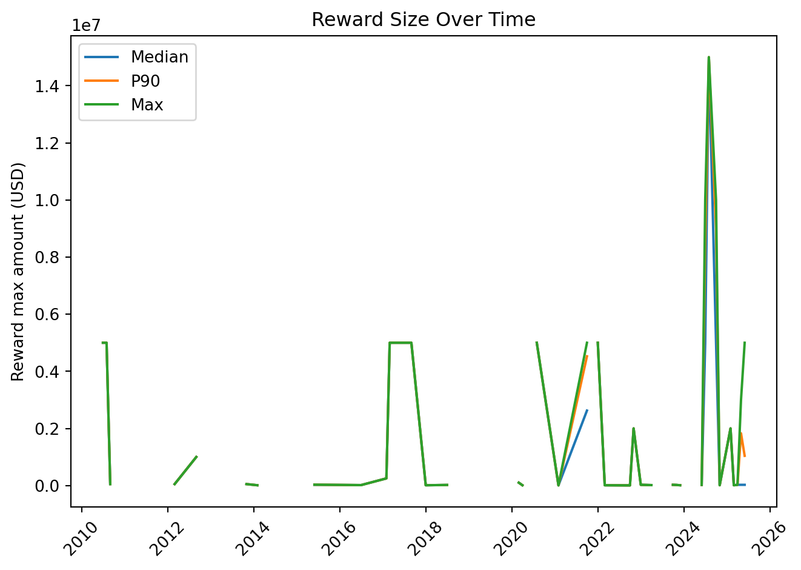

from fbi_wanted_analysis import fetch_current_wanted, clean_wanted
# Pull the first page of results (50 records)
raw = fetch_current_wanted(page_size=50, pages=1)
raw.shape(50, 10)This tutorial walks you through how to install fbi_wanted_analysis, pull live data from the FBI Wanted API, clean it, and run the core analysis functions that answer the four research questions for the project.
We will:
You can install the package either with uv or with pip, depending on your workflow.
uvFrom a terminal in your project folder:
uv will resolve and install:
fbi-wanted-analysispandasnumpyrequestsstreamlitpipIf you prefer pip:
Then you are ready to import the package in Python or Jupyter.
The package has three main modules:
fbi_wanted_analysis.__init__
fetch_current_wantedclean_wantedfbi_wanted_analysis.cleaning
rewards.pyfbi_wanted_analysis.analysis
The core workflow:
fetch_current_wanted() to call the FBI Wanted API and return a raw DataFrame.DataFrame into clean_wanted() to add parsed reward fields and normalize columns.analysis.py to create summary tables for each research question.Start by importing from the top-level package and pulling a small sample.
(50, 10)You should see something like (N, K) where N is the number of rows and K is the number of columns.
Inspect the first few rows:
| field_offices | details | caution | title | race | publication | subjects | reward_text | uid | sex | |
|---|---|---|---|---|---|---|---|---|---|---|
| 0 | [lasvegas] | <p>The Federal Bureau of Investigation's Las V... | None | DEFACEMENT OF FEDERAL PROPERTY | None | 2025-06-25T09:42:00 | [Seeking Information] | The FBI is offering a reward of up to $1,000 f... | 07f33176ac684ec19ac5a2794bdf196f | None |
| 1 | [louisville] | None | <p>Terry Matthews is wanted for his alleged in... | TERRY MATTHEWS | black | 2025-07-02T08:03:00 | [Criminal Enterprise Investigations] | None | de4766a45bf4435bb3303b6da7d1febb | Male |
| 2 | None | <p>In June of 2021, Celeste Doghmi was reporte... | None | CELESTE DIANA DOGHMI - AUBURN, MAINE | None | 2025-07-02T07:26:00 | [ViCAP Missing Persons] | None | 5126982a11c6494fa53fb44d54c56206 | Female |
| 3 | [miami] | None | <p>Vitel'Homme Innocent, as leader of the gang... | VITEL'HOMME INNOCENT | black | 2022-11-03T10:49:00 | [Additional Violent Crimes] | The United States Department of State’s Transn... | 466379d55d804fdeabfc3944c5d44331 | Male |
| 4 | [dallas] | None | <p>Cindy Rodriguez Singh is wanted for alleged... | CINDY RODRIGUEZ SINGH | hispanic | 2024-07-11T13:11:00 | [Ten Most Wanted Fugitives, Case of the Week] | The FBI is offering a reward of up to $250,000... | fa908b7efed64603b9f95efa0288643f | Female |
The raw DataFrame includes columns such as:
uidtitlepublication (string or timestamp)field_officessexracesubjectsreward_textcautiondetailsNext, run the cleaning pipeline. This function:
publication into a proper datetimefield_offices into a consistent stringreward_text into numeric and categorical fields using parse_reward from rewards.py| field_offices | details | caution | title | race | publication | subjects | reward_text | uid | sex | reward_text_clean | reward_has_text | reward_has_amount | reward_amounts_usd | reward_amount_min_usd | reward_amount_max_usd | reward_is_up_to | reward_mentions_additional | reward_program | |
|---|---|---|---|---|---|---|---|---|---|---|---|---|---|---|---|---|---|---|---|
| 0 | lasvegas | <p>The Federal Bureau of Investigation's Las V... | None | DEFACEMENT OF FEDERAL PROPERTY | None | 2025-06-25 09:42:00 | [Seeking Information] | The FBI is offering a reward of up to $1,000 f... | 07f33176ac684ec19ac5a2794bdf196f | None | The FBI is offering a reward of up to $1,000 f... | True | True | [1000] | 1000 | 1000 | True | False | FBI |
| 1 | louisville | None | <p>Terry Matthews is wanted for his alleged in... | TERRY MATTHEWS | black | 2025-07-02 08:03:00 | [Criminal Enterprise Investigations] | None | de4766a45bf4435bb3303b6da7d1febb | Male | False | False | [] | <NA> | <NA> | False | False | Other/Unknown | |
| 2 | <p>In June of 2021, Celeste Doghmi was reporte... | None | CELESTE DIANA DOGHMI - AUBURN, MAINE | None | 2025-07-02 07:26:00 | [ViCAP Missing Persons] | None | 5126982a11c6494fa53fb44d54c56206 | Female | False | False | [] | <NA> | <NA> | False | False | Other/Unknown | ||
| 3 | miami | None | <p>Vitel'Homme Innocent, as leader of the gang... | VITEL'HOMME INNOCENT | black | 2022-11-03 10:49:00 | [Additional Violent Crimes] | The United States Department of State’s Transn... | 466379d55d804fdeabfc3944c5d44331 | Male | The United States Department of State’s Transn... | True | True | [2000000] | 2000000 | 2000000 | True | False | State Department |
| 4 | dallas | None | <p>Cindy Rodriguez Singh is wanted for alleged... | CINDY RODRIGUEZ SINGH | hispanic | 2024-07-11 13:11:00 | [Ten Most Wanted Fugitives, Case of the Week] | The FBI is offering a reward of up to $250,000... | fa908b7efed64603b9f95efa0288643f | Female | The FBI is offering a reward of up to $250,000... | True | True | [250000] | 250000 | 250000 | True | False | FBI |
After cleaning, you should see additional columns such as:
reward_text_cleanreward_has_text (True/False)reward_has_amount (True/False)reward_amounts_usd (list of ints)reward_amount_min_usd (int or NA)reward_amount_max_usd (int or NA)reward_is_up_to (True/False)reward_mentions_additional (True/False)reward_program (for example: "FBI", "Rewards for Justice", "Other/Unknown")You can quickly check the distribution of reward programs:
reward_program
FBI 26
Other/Unknown 21
State Department 2
Rewards for Justice 1
Name: count, dtype: int64To run the analysis helpers, import them from the analysis module.
Below we assume you already have a cleaned DataFrame named clean.
Research Question 1 > How does the quantity of most wanted cases change over time?
Simplest option: you can use rq4_volume_trend on the publication date, aggregated by month.
/Users/dallinrobinson/School/stat386/fbi-wanted-analysis/src/fbi_wanted_analysis/analysis.py:206: UserWarning: Converting to PeriodArray/Index representation will drop timezone information.
out["period"] = dt.dt.to_period(freq).dt.to_timestamp()| period | listings | |
|---|---|---|
| 0 | 2010-07-01 | 11 |
| 1 | 2010-08-01 | 15 |
| 2 | 2010-09-01 | 3 |
| 3 | 2010-10-01 | 1 |
| 4 | 2012-03-01 | 2 |
Columns:
period: start of the period (for example, first day of the month)listings: number of listings in that periodPlot it:

This gives a quick visual of whether the posting volume is stable, rising, or clustered in specific months.
If you want to work directly with snapshots and a snapshot_date column, you can also use quantity_over_time() instead of rq4_volume_trend() as long as your data frame includes that column.
Research Question 2 > Which U.S. regions, states, or FBI field offices have the highest concentration of wanted cases, and how has this distribution shifted historically?
The analysis.py module includes a general helper, geographic_concentration_over_time, that expects a snapshot_date column and a geography column such as field_office or state. For simple work with the current pull, it is often easiest to summarize field offices directly from the cleaned data.
Because clean_wanted stores field_offices as a comma separated string, you can split and explode it to count offices.
geo_df = clean.copy()
# Split comma separated field_offices into rows
geo_df["field_offices_list"] = geo_df["field_offices"].fillna("").astype(str).str.split(",")
geo_df = geo_df.explode("field_offices_list")
geo_df["field_offices_list"] = geo_df["field_offices_list"].str.strip()
geo_df = geo_df[geo_df["field_offices_list"] != ""]
# Top offices by count
top_offices = geo_df["field_offices_list"].value_counts().head(15)
top_officesfield_offices_list
washingtondc 20
losangeles 17
miami 8
sanfrancisco 6
newyork 5
philadelphia 5
chicago 4
seattle 4
tampa 4
houston 4
indianapolis 3
sacramento 3
minneapolis 3
buffalo 3
neworleans 3
Name: count, dtype: int64You can also combine this with time information by grouping on both publication and field_offices_list if you want a time series for each office.
| publication_month | field_offices_list | listings | |
|---|---|---|---|
| 0 | 2010-07-01 | newyork | 1 |
| 1 | 2010-07-01 | washingtondc | 10 |
| 2 | 2010-08-01 | buffalo | 1 |
| 3 | 2010-08-01 | chicago | 1 |
| 4 | 2010-08-01 | jackson | 1 |
You can then filter to a specific office of interest and plot its trend over time.
Research Question 3 > What types of crimes receive the highest reward amounts?
Use reward_by_crime_type on the cleaned data.
| crime_type | median_reward | mean_reward | max_reward | listings | |
|---|---|---|---|---|---|
| 0 | Counterintelligence | 15000000.0 | 15000000.0 | 15000000 | 2 |
| 1 | Most Wanted Terrorists | 5000000.0 | 4227777.777778 | 5000000 | 18 |
| 2 | Ten Most Wanted Fugitives | 5000000.0 | 3750000.0 | 10000000 | 9 |
| 3 | Cyber's Most Wanted | 3500000.0 | 4750000.0 | 10000000 | 4 |
| 4 | Case of the Week | 250000.0 | 250000.0 | 250000 | 1 |
| 5 | Additional Violent Crimes | 25000.0 | 421000.0 | 2000000 | 5 |
| 6 | Violent Crimes - Murders | 25000.0 | 25000.0 | 25000 | 1 |
| 7 | Violent Crime - Murders | 22500.0 | 22500.0 | 30000 | 4 |
| 8 | Law Enforcement Assistance | 20000.0 | 16666.666667 | 25000 | 3 |
| 9 | Criminal Enterprise Investigations | 17500.0 | 17500.0 | 25000 | 2 |
This returns:
crime_type: FBI subject tagmedian_reward: median of reward_amount_max_usdmean_reward: mean of reward_amount_max_usdmax_reward: maximum of reward_amount_max_usdlistings: number of listings that contributed to that rowLook at the top crime types by median reward:
| crime_type | median_reward | mean_reward | max_reward | listings | |
|---|---|---|---|---|---|
| 0 | Counterintelligence | 15000000.0 | 15000000.0 | 15000000 | 2 |
| 1 | Most Wanted Terrorists | 5000000.0 | 4227777.777778 | 5000000 | 18 |
| 2 | Ten Most Wanted Fugitives | 5000000.0 | 3750000.0 | 10000000 | 9 |
| 3 | Cyber's Most Wanted | 3500000.0 | 4750000.0 | 10000000 | 4 |
| 4 | Case of the Week | 250000.0 | 250000.0 | 250000 | 1 |
| 5 | Additional Violent Crimes | 25000.0 | 421000.0 | 2000000 | 5 |
| 6 | Violent Crimes - Murders | 25000.0 | 25000.0 | 25000 | 1 |
| 7 | Violent Crime - Murders | 22500.0 | 22500.0 | 30000 | 4 |
| 8 | Law Enforcement Assistance | 20000.0 | 16666.666667 | 25000 | 3 |
| 9 | Criminal Enterprise Investigations | 17500.0 | 17500.0 | 25000 | 2 |
| 10 | Seeking Information | 17500.0 | 23093.75 | 100000 | 16 |
| 11 | Crimes Against Children | 10000.0 | 10000.0 | 10000 | 1 |
| 12 | Indian Country | 10000.0 | 19166.666667 | 75000 | 6 |
| 13 | Kidnappings and Missing Persons | 10000.0 | 847500.0 | 5000000 | 12 |
| 14 | White-Collar Crime | 10000.0 | 10000.0 | 10000 | 1 |
Plot the top crime types:

This gives a direct view of which subject tags tend to be associated with higher rewards.
Research Question 4 > What do trends in rewards and quantity of wanted persons reveal about law enforcement priorities?
For this question the package includes several helper functions that look at:
/Users/dallinrobinson/School/stat386/fbi-wanted-analysis/src/fbi_wanted_analysis/analysis.py:206: UserWarning: Converting to PeriodArray/Index representation will drop timezone information.
out["period"] = dt.dt.to_period(freq).dt.to_timestamp()| period | listings | pct_with_reward_text | pct_with_numeric_reward | median_reward_max_usd | p90_reward_max_usd | max_reward_max_usd | |
|---|---|---|---|---|---|---|---|
| 0 | 2010-07-01 | 11 | 100.000000 | 100.000000 | 5000000.0 | 5000000.0 | 5000000.0 |
| 1 | 2010-08-01 | 15 | 33.333333 | 26.666667 | 5000000.0 | 5000000.0 | 5000000.0 |
| 2 | 2010-09-01 | 3 | 66.666667 | 33.333333 | 50000.0 | 50000.0 | 50000.0 |
| 3 | 2010-10-01 | 1 | 0.000000 | 0.000000 | NaN | NaN | NaN |
| 4 | 2012-03-01 | 2 | 50.000000 | 50.000000 | 50000.0 | 50000.0 | 50000.0 |
Columns include:
periodlistingspct_with_reward_textpct_with_numeric_rewardmedian_reward_max_usdp90_reward_max_usdmax_reward_max_usdYou can plot both prevalence and size.
plt.figure()
plt.plot(reward_trend["period"], reward_trend["pct_with_reward_text"], label="Reward text present")
plt.plot(reward_trend["period"], reward_trend["pct_with_numeric_reward"], label="Numeric reward present")
plt.xticks(rotation=45)
plt.ylabel("Percent of listings")
plt.title("Reward Prevalence Over Time")
plt.legend()
plt.tight_layout()
plt.figure()
plt.plot(reward_trend["period"], reward_trend["median_reward_max_usd"], label="Median")
plt.plot(reward_trend["period"], reward_trend["p90_reward_max_usd"], label="P90")
plt.plot(reward_trend["period"], reward_trend["max_reward_max_usd"], label="Max")
plt.xticks(rotation=45)
plt.ylabel("Reward max amount (USD)")
plt.title("Reward Size Over Time")
plt.legend()
plt.tight_layout()
This lets you compare how many cases have rewards and how large those rewards are across time.
| subject | listings | pct_numeric_reward | median_reward_max_usd | |
|---|---|---|---|---|
| 10 | Seeking Information | 22 | 72.727273 | 17500.0 |
| 9 | Most Wanted Terrorists | 19 | 94.736842 | 5000000.0 |
| 6 | Kidnappings and Missing Persons | 17 | 70.588235 | 10000.0 |
| 15 | ViCAP Missing Persons | 14 | 0.000000 | NaN |
| 2 | Crimes Against Children | 12 | 8.333333 | 10000.0 |
| 4 | Cyber's Most Wanted | 11 | 36.363636 | 3500000.0 |
| 12 | Ten Most Wanted Fugitives | 9 | 100.000000 | 5000000.0 |
| 3 | Criminal Enterprise Investigations | 7 | 28.571429 | 17500.0 |
| 0 | Additional Violent Crimes | 5 | 100.000000 | 25000.0 |
| 17 | Violent Crime - Murders | 5 | 80.000000 | 22500.0 |
| 8 | Law Enforcement Assistance | 5 | 60.000000 | 20000.0 |
| 21 | White-Collar Crime | 5 | 20.000000 | 10000.0 |
| 14 | ViCAP Homicides and Sexual Assaults | 4 | 0.000000 | NaN |
| 16 | ViCAP Unidentified Persons | 3 | 0.000000 | NaN |
| 19 | White Collar Crime | 3 | 0.000000 | NaN |
Columns:
subjectlistingspct_numeric_rewardmedian_reward_max_usdThis gives a simple proxy for “priority” by subject. Subjects that appear often and have higher numeric rewards look like higher priority categories in the data.
| reward_program | listings_with_text | listings_with_amount | median_reward_max_usd | max_reward_max_usd | |
|---|---|---|---|---|---|
| 0 | FBI | 49 | 47 | 20000.0 | 250000.0 |
| 2 | Rewards for Justice | 22 | 22 | 5000000.0 | 15000000.0 |
| 3 | State Department | 8 | 8 | 4000000.0 | 10000000.0 |
| 1 | Other/Unknown | 1 | 1 | 5000000.0 | 5000000.0 |
Columns:
reward_programlistings_with_textlistings_with_amountmedian_reward_max_usdmax_reward_max_usdThis is useful if you want to compare things like:
| field_office | listings | pct_numeric_reward | median_reward_max_usd | |
|---|---|---|---|---|
| 0 | Unknown | 23 | 0.000000 | NaN |
| 41 | washingtondc | 20 | 95.000000 | 5000000.0 |
| 18 | losangeles | 17 | 23.529412 | 625000.0 |
| 20 | miami | 8 | 25.000000 | 1001250.0 |
| 36 | sanfrancisco | 6 | 100.000000 | 25000.0 |
| 26 | newyork | 5 | 60.000000 | 5000000.0 |
| 28 | philadelphia | 5 | 20.000000 | 25000.0 |
| 12 | houston | 4 | 100.000000 | 4000000.0 |
| 7 | chicago | 4 | 50.000000 | 15000.0 |
| 37 | seattle | 4 | 75.000000 | 10000.0 |
| 40 | tampa | 4 | 25.000000 | 5000.0 |
| 25 | neworleans | 3 | 100.000000 | 20000.0 |
| 32 | sacramento | 3 | 33.333333 | 20000.0 |
| 5 | buffalo | 3 | 100.000000 | 15000.0 |
| 13 | indianapolis | 3 | 33.333333 | 10000.0 |
Columns:
field_officelistingspct_numeric_rewardmedian_reward_max_usdHere you can see which field offices:
You might pair this with maps or external context, but the function itself gives you a solid starting point.
The repo also includes a streamlit_app.py file that builds an interactive dashboard on top of the same functions you have used here.
In a terminal, from the project root, run:
The app will:
Fetch and clean data using fetch_current_wanted and clean_wanted
Let you filter by title, field office, sex, race, subjects, and reward presence
Show:
You can compare the results you see in this notebook with the interactive charts in the app. Both use the same underlying functions.
The fbi_wanted_analysis package gives you:
fetch_current_wantedclean_wantedparse_reward used inside the cleaning stepYou can use it either in scripts and notebooks or through the Streamlit dashboard. For most custom analysis, the pattern is: